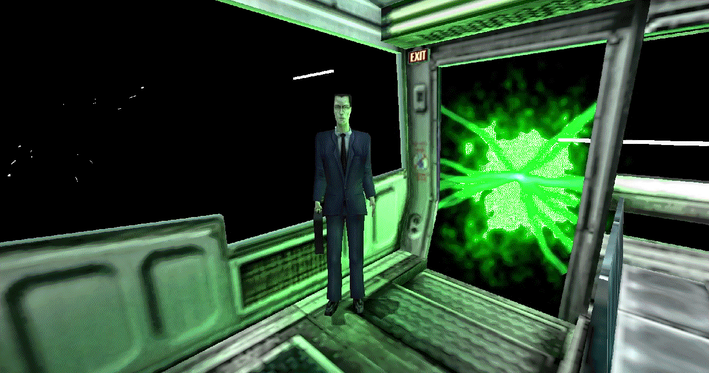

When I think of “Unforeseen Consequences,” my mind immediately jumps to the
Half-Life saga
Half-Life is a first-person shooter video game series developed by Valve, following scientist Gordon Freeman as he battles alien invasions and government forces after a catastrophic experiment at the Black Mesa Research Facility. It’s acclaimed for its storytelling, immersive gameplay, and innovative level design.

: after all, the reference comes from there. As I write these lines, I don’t know how things will turn out… or maybe I do, depending on what your imagination decides.
Don’t get me wrong: I’m not thinking negatively. I’m genuinely excited for what’s coming from tomorrow onward, yet I can’t help but wonder if there will be aspects that I currently consider irrelevant, but my future self already knows and maybe regrets.
Perhaps I should clarify what I mean by unforeseen consequences: they are almost never negative. They are reflections, small rhetorical details. Writing an apparently futile page before everything begins might seem pointless, but the idea of being able to read it again in a few months and smile, and maybe even realize I was right,feels really good.
Maybe it’s fine this way. Maybe it’s fine not to have a detailed explanation, but just a greeting. To anyone reading these lines: I hope what’s coming will be truly wonderful. I can’t wait. Now, I’ll go tidy up the house… tomorrow will be a different day.
Added 26/10/2025
Rereading these words makes me smile: I think it’s the best way to inaugurate the site, which will serve as the foundation for future videos. Looking back, I would confirm everything: from that day on, true “Unforeseen Consequences” unfolded.